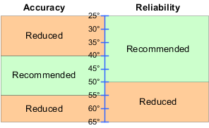

Queries the temperature within the instrument. The returned value indicates the average of the temperatures measured at the individual RF modules.
The recommended temperature range is illustrated in the following figure.

| Return values: | ||||
| <Temperature> | Temperature in degrees
| |||
| Usage: | Query only | |||
| Firmware/Software: | V3.2.20 | |||